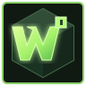

DAILY QUEST
کرفتینگ روزانه
۳ دستور را بساز و جایزه آزمایشی بگیر.
0 / 3

WORLDFORGECRAFT YOUR NEXT ADVENTUREمادهای تازه کشف کن، سرور مناسب خودت را پیدا کن، سازههای الهامبخش ببین و در کارگاه کرفتینگ مهارتت را بالا ببر.
هر بخش دنیای خودش را دارد. انتخاب کن و مستقیم وارد شو.
مودهای شناختهشده، فیلتر و لینک منبع اصلی.
ورود به بخش ↗ 02⌁SERVER RADARپیدا کردن سرور بر اساس سبک و نسخهی بازی.
دیدن سرورها ↗ 03▧BUILD ARCHIVEایدههای ساختوساز و دستهبندی سازهها.
گشتوگذار ↗ 04▦INTERACTIVE MINI-GAMEدستورهای ساخت معتبر را تمرین کن؛ آزاد یا زماندار.
شروع مینیگیم ↗FEATURED EXPERIENCE 05⌘COMMUNITYنمایش قابلیتهای جامعه و مسیرهای ارتباطی.
ورود به جامعه ↗ 06◇PLAYER PROFILEرکوردها و مأموریتهای ذخیرهشده روی دستگاه.
مشاهده پیشرفت ↗جستوجو، فیلتر و رفتن به صفحه رسمی هر پروژه.
فهرست اطلاعاتی است؛ سازگاری نسخه و لودر را پیش از نصب در صفحه رسمی بررسی کن.
کارتهای نمونه برای نمایش ظاهر پورتال؛ هنوز به فهرست زنده سرورها وصل نیست.
در نسخه فعلی فرم معرفی فقط درخواست را روی همین دستگاه ذخیره میکند؛ برای ارسال واقعی به سرور و پنل مدیریت نیاز داریم.
ایدههای سازهای را ببین و برای ساخت بعدی الهام بگیر.
آزمایشگاه آزاد یا چالش زماندار؛ میز را بچین، دستور را بررسی کن و آیتم بساز.
Place eight planks around the center.
چیدمان الهامگرفته از کامیونیتیپلتفرمها؛ بخش گفتوگو در این نسخه نمایشی است و پیام زنده ارسال نمیکند.
به کارگاه خوش آمدی؛ یک جایگاه نمایشی برای گفتوگوهای جامعه.
پیشرفت محلی، مأموریت روزانه و نشانها روی همین مرورگر ذخیره میشوند.
۳ دستور را بساز و جایزه آزمایشی بگیر.
این جدول فقط رکورد همین دستگاه را نمایش میدهد؛ رتبهبندی آنلاین متصل نیست.
کشف کن، بساز، به اشتراک بگذار.